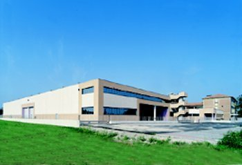

Italsughero
Dei Fratelli Correggio

Quando, em 1962, Primo, Battista, Quarto e Giovanni fundaram a Italsughero, o sonho de muitas gerações da família Correggi tornou-se uma realidade tangível. Investiram energias, entusiasmo e grande intuição empresarial. O seu objetivo era criar uma empresa tecnologicamente avançada, a fim de controlar todas as fases do processo de produção, desde a matéria-prima até ao produto acabado. Os resultados dos seus esforços são hoje confirmados pela moderna organização da Italsughero e pelo seu processo único de transformação da cortiça em bruto em rolhas de qualidade irrepreensível. Hoje, como no passado, permanece o prazer de lidar e trabalhar com a cortiça, a vontade de parar o tempo no universo de uma garrafa e o desejo e o firme compromisso de produzir não apenas o bom, mas o excecional. É isto que faz de Italsughero a entidade líder no seu sector.